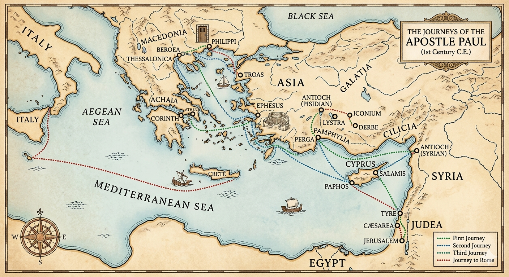

Read the scripture clue on the right, then locate and click the correct city dot on the map.

Current Journey Stop1 of 11
Total Score0 / 11
Scripture Clue
Loading clue...
Acts
Scriptural Significance ❖
Loading facts...
Journey Complete!
❖ ❖ ❖
Praiseworthy examination! You completed the missionary journeys and verified all locations.
Acts 17:11
"Now these were more noble-minded than those in Thessalonica, for they accepted the word with the greatest eagerness of mind, carefully examining the Scriptures daily..."